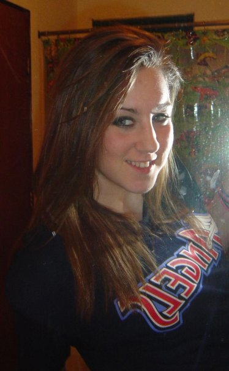

Hi, I'm Ashley. I've always been interested in photography and enjoy running around outside finding strange things to photograph. From bugs to flowers and landscapes to animals, I photograph whatever jumps in front of my lens. Last year I decided to start classes to really learn how to take better photos and to really learn how to use my camera. It's been interesting to say the least. I've definitely picked up on many new techniques and am constantly getting better. My favorite part was when I visited my family last fall and got the chance to practice with my little sister. The photos I took really showed off how much I've learned.
"Your first 10,000 photographs are your worst."

Here's What I use:
Besides my main photography equipment, I have plenty of books and reference material that I look at before shooting. This helps me pick a concept or technique before I go out and practice.